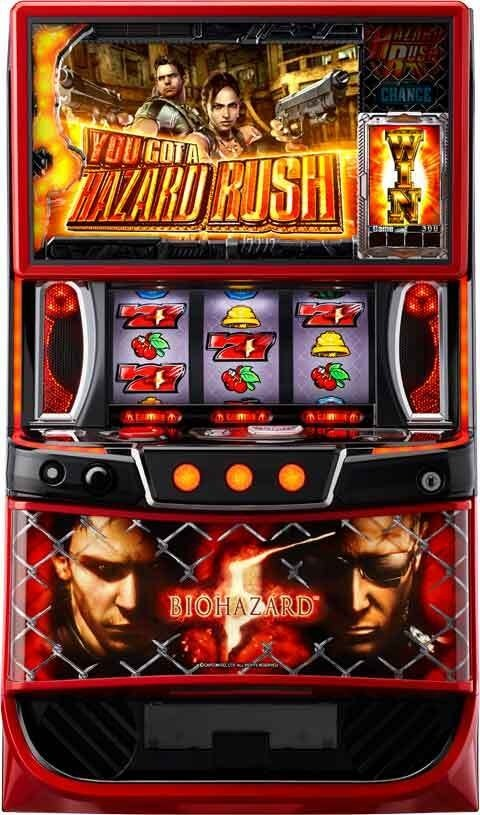
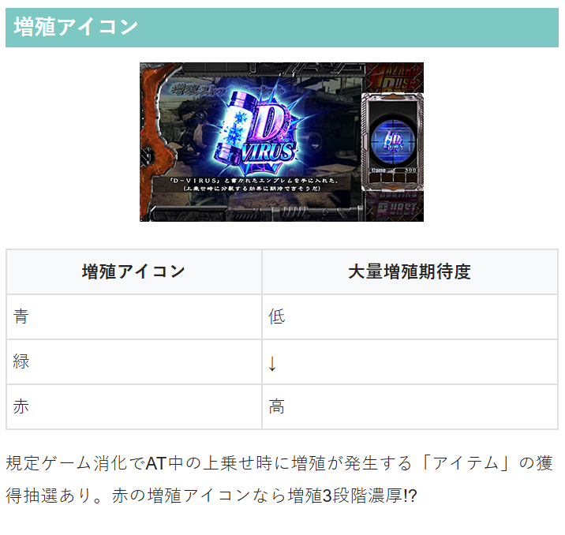
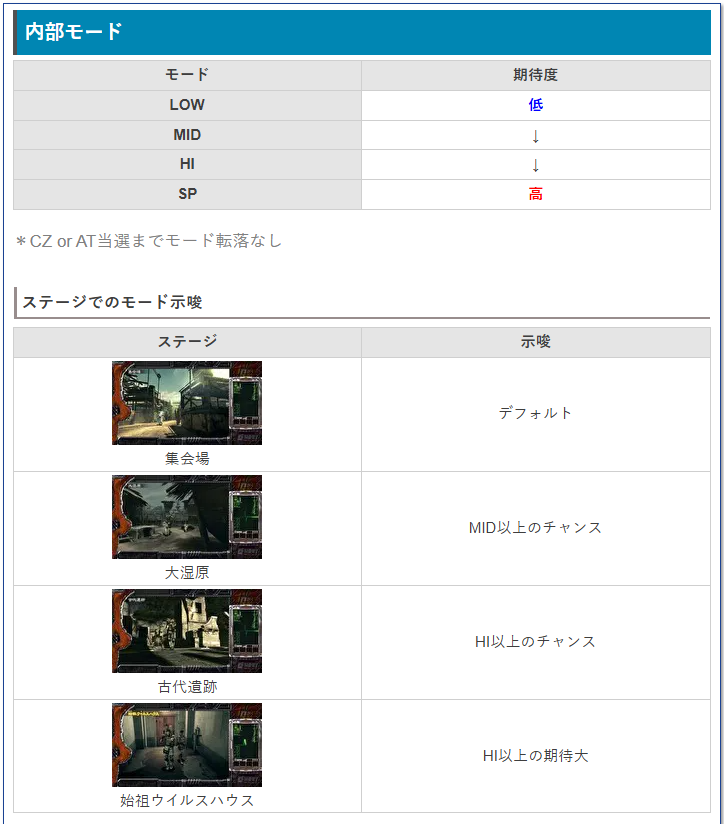
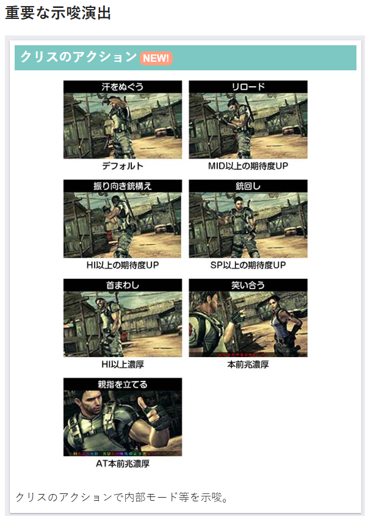
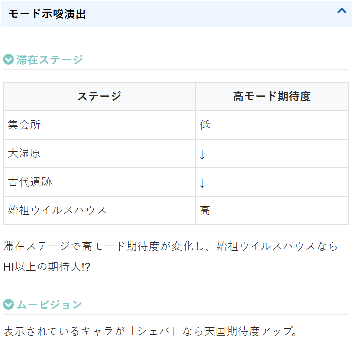
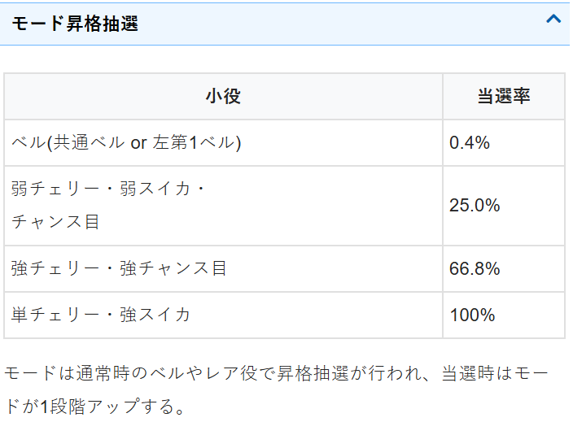
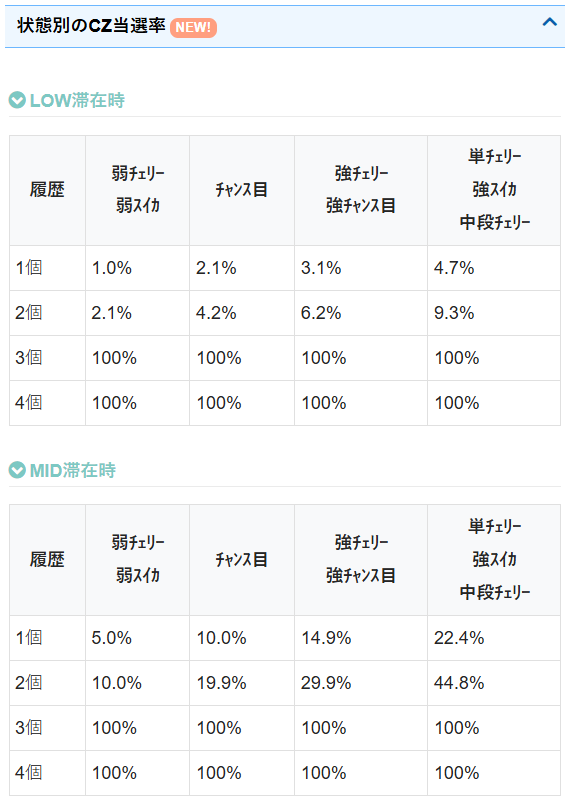
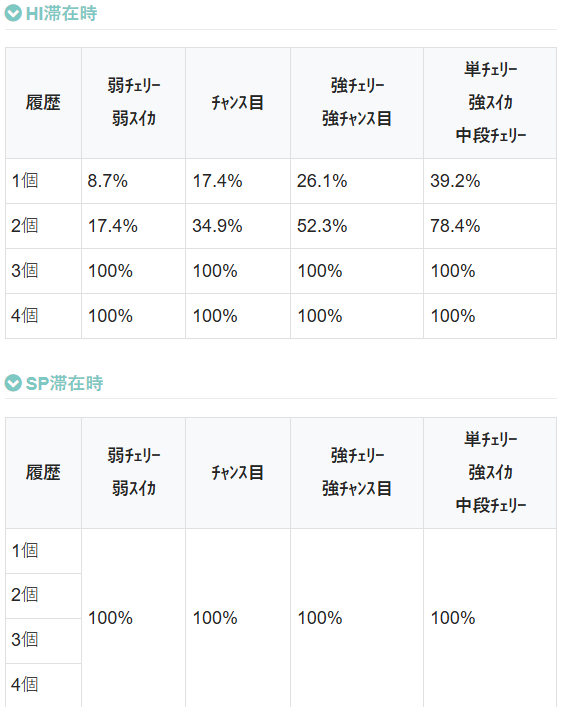
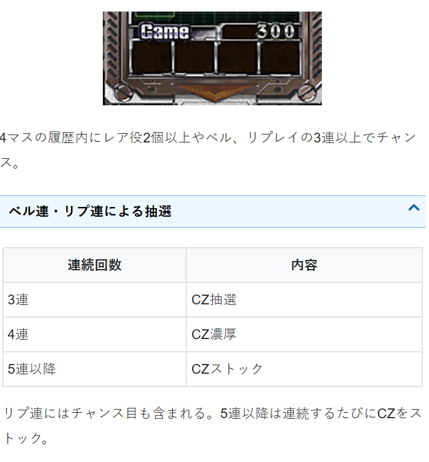

Lバイオハザード5


狙い目
【リセット狙い】
290Gから
【AT間天井狙い】
一撃600枚未満後 520Gから
一撃600枚以上1200枚未満後 550Gから
一撃1200枚以上後 580Gから
※差枚が+500枚以上の場合はボーダーを40G下げる
【ゾーン狙い】
前回天井（999G越え）は次回天国濃厚 0Gから天国ゾーンまで
※天井からのAT終了後１G目のレア役でAT復帰した場合は無効
上位CZ後は天国期待度アップ0から打てそう
・サブ液晶シェバ出現は実践上弱め。単体ではやめが良さそう。
【有利区間切れ狙い】
差枚+1500枚以上 0Gから天国確認。内部モード良さそうならCZ当選まで？
差枚+1800枚以上 AT当選まで？慎重に行くなら天国確認まで？
有利切れ狙い時の注意点
同一有利区間内+2100枚前後到達（+2000枚前後で切れる可能性あり）、1回のATで2400枚獲得、またはエピソード10話到達でクライマックスウェスカーゾーンに突入し、突入時が有利切れのタイミングと思われる。
差枚狙い時は、差枚で+2100枚（または+2000枚前後）超えていないか、1回のATで2400枚超えていないか、エピソード10話到達（ATの粒が10個）していないかを確認。一つでも該当すると既に有利切れしていると思われる。
クライマックウェスカーゾーン成功時は35G以内の初当たり履歴が出てくるため有利切れの有無を確認出来るが、失敗時は履歴の信号が上がらないため判断出来ない。ただ、失敗時は有利切れによりSTAGE引継ぎがないため、150G以内の台でSTAGE引継ぎの表示が無ければ失敗後と判断出来る。
【モード狙い】
狙えるか不明だが、モードがCZかAT当選まで転落しないため、HIモード以上はCZかAT当選まで？
以下、演出はHIモード以上の示唆
・始祖ウイルスハウス
・赤ステージチェンジでHIモード以上濃厚？
【遺跡ステージ狙い】
単体では厳しい。
増殖アイコン所持なら次のステチェンやクリスのアクションを確認してHIモード以上濃厚ならCZ当選まで。
またはAT後6話以上引継ぎ状態なら示唆を確認しつつCZまでといった立ち回りが有効そう。
遺跡ステージ滞在時点で差枚+1000枚以上ならモード確認するなども良さそう。
【AT中エピソード引継ぎ狙い】
10話到達で上位ATへのCZが確定。150GまでAT当選すれば話数を引き継ぐ。
８話以上なら天国フォロー。積極派は6話以上なら天国フォロー。
【増殖アイコン狙い】
赤ならAT当選までで良さそう。緑はボーダー下げる。2個以上はAT当選まで？
天井狙い時に増殖アイコン無しの場合は30Gくらいボーダー上げる？

やめ時
AT終了後は１G回してやめ（１G目レア役でAT濃厚）。
本前兆中にCZ当選の場合はAT後に出てくるため、少し回してやめが無難？
特に小役連からのCZ当選→ATの場合は複数個CZ当選してる可能性はありそう。
前回天井後は天国まで。
上位CZ後は天国モードの期待度アップ。天国まで回す方が良さそう。
8話以上で終了時は天国まで。積極派は6話以上で天国まで。
AT後遺跡ステージ以上からスタートした場合はHIモード以上？（前作はHIモード以上濃厚）
その他
・天井短縮とならないケースの履歴
14：12の履歴がレア役でのAT引戻しと思われる

[su_spoiler title=”内部モード、モード示唆一覧” style=”fancy”]







[/su_spoiler]
参考元
基本情報
- メーカー: エンターライズ
- 機械割: 97.8% 〜 114.9%
- 導入開始日: 2025年03月03日（月）
- ゲーム性概要: ●5号機の『パチスロ バイオハザード5』のゲーム性を踏襲したスマスロ機 ●ツラヌキで突入する上位AT「プレミアムハザードラッシュ」も搭載！ ●通常時はレア役や小役履歴でCZを抽選 ●ATは純増約2.5枚で、消化中はゲーム数上乗せやエピソードなどを抽選 ●エピソードコンプリートで上位ATをかけたCZへ突入


打ち方
打ち方・小役
打ち方（小役狙い）
［最初に狙う絵柄］ 左リール上段付近にBAR（赤7でも可）を目押し。スイカがスベってきた時は中リールを目押し、ほかの停止形は中＆右リールフリー打ちでOKだ。

［スイカ停止時］ 中リールは赤7目安で狙えばスイカの取りこぼしはない。

［レア役の停止例］ 弱スイカの停止形でも中リールがビタ止まりor4コマスベリの場合は強スイカの可能性あり。 チャンス目も左リールの目押し位置によって強チャンス目の可能性がある。

変則押しはNG
ナビ非発生時は左1stでの消化を推奨だ。

中段チェリー
中段チェリーの恩恵
| 状態 | 恩恵 |
|---|---|
| 通常時 | AT濃厚（2セット以上）＋CZストック抽選、 約1/10でロングフリーズが発生 |
| パニックゾーン中 | 成功濃厚 |
| ウェスカーゾーン中 | 100%到達後はATセットストック5個獲得濃厚 （プレミアムウェスカーゾーンも共通） |
解析情報通常時
小役関連
小役履歴
液晶右側のムービジョン下部には、4G分の小役履歴が表示。小役が連続して成立したり、履歴内に複数のレア役が表示されるとCZやATのチャンスとなる。

通常時・小役履歴の抽選内容
| 役 | 内容 |
|---|---|
| リプレイorベル | 3連でチャンス、4連はCZ濃厚、 5連以降はCZストック抽選 |
| レア役 | 履歴内に2個表示でチャンス、3個表示でCZ濃厚 |
※リプレイ連続にはチャンス目or強チャンス目も含む
レア役ごとのランク
| 役 | ランク |
|---|---|
| 弱レア役 | ランク1 |
| 強チャンス目・3連チェリー | ランク2 |
| 強スイカ・単チェリー | ランク3 |
| 中段チェリー | ランク4 |
履歴内のレア役個数別のランクアップ
| 履歴内レア役 | ランクアップ |
|---|---|
| 1個 | 1ランク以上アップ |
| 2個 | 2ランク以上アップ |
| 3個 | 3ランクアップ |
レア役は4つのランクに分かれていて、履歴内のレア役個数に応じてランクがアップ。例えば弱チェリー→弱チェリーと引いた場合は1ランク以上アップするので、通常時であればランク2以上（強レア役以上）の数値でCZモードアップなどが抽選される。
小役確率
| 役 | 確率 |
|---|---|
| チャンス目 | 1/136.2 |
| 強チャンス目 | 1/682.7 |
| 弱スイカ | 1/66.5 |
| 強スイカ | 1/873.8 |
| 弱チェリー | 1/123.0 |
| 3連チェリー | 1/624.2 |
| 単チェリー | 1/1260.3 |
| 中段チェリー | 1/16384.0 |
| レア役合算 | 1/28.11 |
CZ当選率
CZモードと成立役を参照してCZを抽選。履歴内のレア役個数が多いほど期待度が上がり、レア役2個以上でレア役を引けば（トータルで履歴内に3個以上表示）CZ当選濃厚となる。 リプレイとベルはそれぞれ3連でCZのチャンス、4連ならCZ濃厚。5連目以降はCZのストックが抽選される（チャンス目・強チャンス目もリプレイの連続に含む）。
CZ当選率 CZモード：LOW
| 役 | 履歴内 レア役0個 | 履歴内 レア役1個 | 履歴内 レア役2個 | 履歴内 レア役3個 |
|---|---|---|---|---|
| チャンス目 | 2.1% | 4.2% | 100% | 100% |
| 強チャンス目 | 3.1% | 6.2% | 100% | 100% |
| 弱チェリー | 1.0% | 2.1% | 100% | 100% |
| 3連チェリー | 3.1% | 6.2% | 100% | 100% |
| 単チェリー | 4.7% | 9.3% | 100% | 100% |
| 弱スイカ | 1.0% | 2.1% | 100% | 100% |
| 強スイカ | 4.7% | 9.3% | 100% | 100% |
| 中段チェリー | 4.7% | 9.3% | 100% | 100% |
CZモード：MID
| 役 | 履歴内 レア役0個 | 履歴内 レア役1個 | 履歴内 レア役2個 | 履歴内 レア役3個 |
|---|---|---|---|---|
| チャンス目 | 10.0% | 19.9% | 100% | 100% |
| 強チャンス目 | 14.9% | 29.9% | 100% | 100% |
| 弱チェリー | 5.0% | 10.0% | 100% | 100% |
| 3連チェリー | 14.9% | 29.9% | 100% | 100% |
| 単チェリー | 22.4% | 44.8% | 100% | 100% |
| 弱スイカ | 5.0% | 10.0% | 100% | 100% |
| 強スイカ | 22.4% | 44.8% | 100% | 100% |
| 中段チェリー | 22.4% | 44.8% | 100% | 100% |
CZモード：HI
| 役 | 履歴内 レア役0個 | 履歴内 レア役1個 | 履歴内 レア役2個 | 履歴内 レア役3個 |
|---|---|---|---|---|
| チャンス目 | 17.4% | 34.9% | 100% | 100% |
| 強チャンス目 | 26.1% | 52.3% | 100% | 100% |
| 弱チェリー | 8.7% | 17.4% | 100% | 100% |
| 3連チェリー | 26.1% | 52.3% | 100% | 100% |
| 単チェリー | 39.2% | 78.4% | 100% | 100% |
| 弱スイカ | 8.7% | 17.4% | 100% | 100% |
| 強スイカ | 39.2% | 78.4% | 100% | 100% |
| 中段チェリー | 39.2% | 78.4% | 100% | 100% |
CZモード：SP
| 役 | 履歴不問 |
|---|---|
| 全レア役 | 100% |
履歴内レア役3個時のレア役は、AT当選＋CZをストックする。
AT直撃当選率
レア役成立時にAT直撃を抽選していて、履歴内にレア役があれば期待度がアップ。AT本前兆中も抽選はおこなわれ、当選時はATをストックする。 履歴内がすべてレア役なら（4つすべてレア役）AT当選＋CZをストックする。
AT当選率
| 役 | 履歴内 レア役0個 | 履歴内 レア役1個 | 履歴内 レア役2個 | 履歴内 レア役3個 |
|---|---|---|---|---|
| チャンス目 | 0.09% | 0.27% | 23.44% | 100% |
| 強チャンス目 | 0.94% | 2.82% | 23.44% | 100% |
| 弱チェリー | 0.04% | 0.13% | 10.94% | 100% |
| 3連チェリー | 0.94% | 2.82% | 21.88% | 100% |
| 単チェリー | 2.56% | 7.69% | 23.44% | 100% |
| 弱スイカ | 0.04% | 0.13% | 10.94% | 100% |
| 強スイカ | 2.56% | 7.69% | 23.44% | 100% |
| 中段チェリー | 100% | 100% | 100% | 100% |
モード
CZモード
通常時はLOW・MID・HI・SPの4つのモードでCZ当選期待度が変化。モードは設定変更時・CZorAT終了時に決まり、通常時のレア役で昇格を抽選する（CZ・AT非当選時のみ）。CZやATに当選するまではモードは転落しない（維持or昇格）。
CZモード振り分け（設定1）
| モード | 振り分け |
|---|---|
| LOW | 32.8% |
| MID | 32.8% |
| HI | 32.8% |
| SP | 1.6% |
CZモード昇格率
| 役 | 昇格率 |
|---|---|
| 共通ベル・左1stベル | 0.4% |
| 弱レア役 | 25.0% |
| 強チャンス目・3連チェリー | 66.8% |
| 強スイカ・単チェリー | 100% |
※CZ・AT非当選時のみ抽選、モード昇格は1段階ずつ
CZループモード
CZ当選時にCZループモードを抽選。モードはループなし・パニックループ（A〜C）・ウェスカーループ（A〜C）の7パターンで、パニックループやウェスカーループに滞在していた場合はCZ終了後に前兆を経由して再びCZに突入する（ATに当選した場合はAT後にCZ突入）。 CZのループが終了かつ、CZストックを持っていない場合は現在のCZループモードを参照して次のCZループモードが抽選される。
CZループモードの特徴
| モード | 特徴 |
|---|---|
| ループなし | ー |
| パニックループA | CZストック時以外、ループなし |
| パニックループB | 約66%でパニックゾーンがループ、 まれにウェスカーループBへ移行 |
| パニックループC | 約70%でパニックゾーンがループ、 ループに漏れるとウェスカーループBへ移行 |
| ウェスカーループA | ウェスカーゾーン終了後は、 CZストックがなければパニックループAへ移行 |
| ウェスカーループB | ウェスカーゾーン終了後は、 ほぼパニックループB or Cへ移行 |
| ウェスカーループC | 約75%で同モード （ウェスカーゾーン） をループ、 ループに漏れるとウェスカーループBへ移行 |
※パニックループ中はパニックゾーン、ウェスカーループ中はウェスカーゾーンへ突入
滞在モードごとの期待CZ突入回数
| モード | パニックゾーン | ウェスカーゾーン |
|---|---|---|
| パニックループA | 1.0回 | ー |
| パニックループB | 4.0回 | 0.4回 |
| パニックループC | 8.1回 | 1.6回 |
| ウェスカーループA | 1.0回 | 1.0回 |
| ウェスカーループB | 4.6回 | 1.6回 |
| ウェスカーループC | 4.6回 | 5.6回 |
※前兆中のレア役でのCZストックを考慮しない、モードによる突入回数
CZやAT本前兆中のレア役ではCZストック抽選がおこなわれていて、当選時はCZやAT終了後に放出。ストックでCZがループしている間はCZループモードは移行しない。
増殖アイコン
増殖アイコン概要
200G消化ごとに獲得する可能性あり。獲得したアイコンはAT中の上乗せ当選時に発動し、必ず増殖上乗せが発生する。AT中に一度も上乗せしなかった場合はラストで必ず上乗せが発生。

増殖アイコン色ごとの期待度
| 色 | 期待度 |
|---|---|
| 青 | 増殖1段階以上 |
| 緑 | 増殖2段階以上 |
| 赤 | 増殖3段階以上 |
増殖アイコンストック抽選

通常時は、200G消化ごとに増殖アイコンストックを抽選。1つもストックを持っていない状態なら、約30%でアイコンを獲得する。
CZ
CZ確率
| 設定 | パニックゾーン | パニックゾーン＆ ウェスカーゾーン合算 |
|---|---|---|
| 1 | 1/152.7 | 1/147.3 |
| 2 | 1/148.9 | 1/143.5 |
| 3 | 1/142.7 | 1/137.5 |
| 4 | 1/138.6 | 1/133.7 |
| 5 | 1/134.3 | 1/129.6 |
| 6 | 1/126.5 | 1/122.1 |
パニックゾーン概要
全役でAT抽選をおこない、フリーズ発生でAT濃厚。3つの演出モードから任意で選択できる。

パニックゾーン性能
| 項目 | 内容 |
|---|---|
| 移行契機 | 小役履歴・レア役時の抽選 |
| 継続ゲーム数 | 10 or 20G or 無限 |
| 消化中の抽選 | 全役でAT抽選 |
| ボーナス期待度 | 約37% |
［演出モード選択］

演出モードごとの特徴
| モード | 特徴 |
|---|---|
| 通常 | 前作を踏襲した演出モード |
| 違和感 | AT当選時に違和感演出が発生 |
| 振動 | AT当選時に筐体振動が発生 |
メニュー画面から演出モードを選択可能。CZ開始時にも変更できる。
［フリーズ発生でAT］

ウェスカーゾーン概要
小役が成立するほど期待度が高まる上位CZ。液晶右側に表示された数字がそのままAT当選期待度になっていて、100%到達でAT濃厚。100%を超えた場合はATのセットストックありが濃厚になる。

ウェスカーゾーン性能
| 項目 | 内容 |
|---|---|
| 移行契機 | 小役履歴・レア役時の抽選 |
| 継続ゲーム数 | 19G＋α |
| 消化中の抽選 | 全役で期待度を上げ、連続演出でATをジャッジ |
| ボーナス期待度 | 約60% |
| その他 | 100%を超えるとAT＋セットストック濃厚、 810%はプレミアムハザードラッシュ |
100%到達後は、成立役に応じてATのセットストックを抽選。レア役成立でセットストック獲得濃厚となる。期待度表示が810%になればプレミアムハザードラッシュ濃厚だ。
継続ゲーム数振り分け
| ゲーム数 | 振り分け |
|---|---|
| 10G | 86.3% |
| 20G | 12.5% |
| AT当選まで | 1.2% |
20Gが選ばれていた場合、10G消化後に告知が発生する。
AT当選率
| 役 | 当該告知 | 次ゲーム告知 | 最終告知 | トータル |
|---|---|---|---|---|
| 下記以外 | 1.6% | ー | 0.8% | 2.3% |
| 弱レア役 | 21.5% | 9.4% | 3.9% | 34.8% |
| 強レア役 | 100% | ー | ー | 100% |
| 中段チェリー | 100% | ー | ー | 100% |
※小役履歴内、2個目のレア役は弱レア役でもAT濃厚
最終告知の告知タイミングは10G刻みの最終ゲーム。例えば5G目に当選した場合は10G目に、14G目に当選した場合は20G目に告知される。履歴内からレア役が消えたゲームでレア役を引いた場合も、2個目のレア役とみなされるため、AT濃厚となる。
AT当選時・ウロボロスモード当選率
| 役 | 当選率 |
|---|---|
| ウロボロスリプレイ | 100% |
| チャンス目 | 0.8% |
| 強チャンス目 | 5.9% |
上記抽選に当選で、AT開始時からウロボロスモードへ突入。ウロボロスリプレイは1/16384で成立するリプレイフラグで、通常リプレイとの区別はつかない。
ウェスカーゾーン中の抽選
液晶右側の期待度が100%到達でAT濃厚。100%を超えた分では追加恩恵が抽選される。
継続ゲーム数振り分け
| ゲーム数 | 振り分け |
|---|---|
| 19G | 50.0% |
| 21G | 30.9% |
| 23G | 9.8% |
| 25G | 4.7% |
| 27G | 3.1% |
| 29G | 1.6% |
※平均ゲーム数は20.7G
期待度アップ抽選
| 役 | 抽選内容 |
|---|---|
| リプレイ・ベル | 約73%でアップ |
| レア役 | アップ濃厚かつ、20%以上アップに期待 |
※アップ抽選はハズレ含む全役でおこなわれる
ウェスカーゾーン中のセットストック抽選
液晶右側の期待度表示が100%に到達すればAT濃厚。以降は成立役に応じてATのセットストック抽選がおこなわれる。期待度表示が上がるほどストック数が多いことを示唆していて、810%到達時はプレミアムハザードラッシュ濃厚だ。
100%到達後・セットストック当選率
| 役 | 当選率 |
|---|---|
| 下記以外 | 抽選あり |
| レア役 | 1or2セット獲得濃厚 |
| 中段チェリー | 5セット獲得濃厚 |
前兆
AT当選時・前兆ゲーム数振り分け
| 前兆 | 振り分け |
|---|---|
| 8G | 1.6% |
| 9G | 1.6% |
| 10G | 3.1% |
| 16G | 12.5% |
| 20G | 18.8% |
| 24G | 18.8% |
| 28G | 18.8% |
| 32G | 25.0% |
上記はAT当選時の前兆ゲーム数振り分け。CZ前兆は10Gよりも長いゲーム数が選ばれるため、10G以内の告知はAT当選濃厚だ。
フリーズ
ロングフリーズ


ロングフリーズ性能
| 項目 | 内容 |
|---|---|
| 発生契機 | 中段チェリー成立時の約1/10 |
| 発生タイミング | 第2停止時 |
| 発生確率 | 約1/176800（設定1） |
| 恩恵 | プレミアムハザードラッシュ |
ロングフリーズ動画
通常時の中段チェリー成立時の約1/10で発生。プレミアムハザードラッシュへ直行する。
解析情報ボーナス時
ハザードラッシュ（AT）
AT概要
ゲーム数管理型のAT。レア役や特化ゾーンでゲーム数を上乗せしつつ、 エピソードの進行を目指すゲーム性 だ 。エピソードは前作と同じく全部で10種類あり、コンプリートすればクライマックスウェスカーゾーンを獲得。 おもにチャンス目で突入するウロボロスモードは今回もチェリーの高確率状態で、特化ゾーンとの複合などで強力なトリガーとなり得る。

ハザードラッシュ性能
| 項目 | 内容 |
|---|---|
| 移行契機 | CZ成功、通常時の直撃など |
| 1Gあたりの純増 | 約2.5枚（上位AT後は4.0枚） |
| 継続ゲーム数 | 50G＋α |
| 消化中の抽選 | 上乗せ（増殖）、特化ゾーン、 エピソード、ウロボロスモード |
AT中・小役履歴の抽選内容
| 役 | 内容 |
|---|---|
| レア役1個 | 上乗せのチャンス |
| レア役2個 | 上乗せ濃厚 |
| レア役3個 | 増殖or変異濃厚 |
| レア役4個 | 2段階以上の増殖濃厚 |
履歴内のレア役個数別のランクアップ
履歴内のレア役個数を参照してレア役のランクがアップする。履歴内2個目のレア役は強レア役として抽選されるので、上乗せ以上濃厚だ。
増殖・変異上乗せ
成立役を参照して増殖や変異上乗せを抽選。強チャンス目と3連チェリーは増殖or変異のチャンス、単チェリーと強スイカは増殖or変異の大チャンスだ。
「増殖」 最大27分裂まで増殖する可能性あり。30G×27分裂の810Gが最大上乗せ。

「変異」 3桁上乗せ濃厚パターンで、1桁上乗せやゾロ目上乗せ時は変異が発生する（最大上乗せは555G）。 上乗せゲーム数が33G or 55Gの場合は増殖or変異濃厚で、33G上乗せ時に変異が発生した場合は133G or 333G、55G上乗せ時に発生した場合は155G or 555Gが上乗せされる。

AT中ステージの引き継ぎ
AT中に進んだステージ（エピソードの回数）と消化ゲーム数は、AT終了後150G消化までorクライマックスウェスカーゾーン当選まで引き継ぎ。150G以内にCZやATの本前兆に当選していて、前兆やCZ消化中に150Gを超えてしまった場合も、150G以内とみなしてくれる。

AT中の内部状態
AT中はステージ開始ごとに内部状態を抽選していて、滞在状態に応じて非増殖時の上乗せ当選率やエピソード当選率が変化。内部状態は通常・高確・超高確の3種類が存在する。 シューティングバーストの当選率もステージごとに異なり、ステージ3と7は期待度が高い。

AT中の内部状態
| 項目 | 内容 |
|---|---|
| 種類 | 通常＜高確＜超高確 |
| 状態で 変化する要素 | 非増殖時の上乗せ当選率、 エピソードの天井ゲーム数抽選 |
| ステージ3＆7 | 高確以上の期待度アップ |
| ステージ10 | 高確濃厚 |
※AT後150G以内に引き戻した場合、内部状態は再抽選 ※シューティングバーストの抽選モードは内部状態とは別に存在
ゲーム数上乗せ抽選について
AT中の滞在状態と成立役を参照して、ゲーム数上乗せを抽選。増殖・変異を優先して抽選するため、増殖や変異と重複して上乗せが発生することはない。
エンタチャンス
AT終了後1G目はおなじみのエンタチャンス。レア役を引けばAT当選濃厚だ。

エピソード当選率
各ステージの内部状態を参照して、ステージ開始時にエピソード当選までの天井ゲーム数を抽選。天井到達＝エピソード当選となるわけではなく、 天井到達後は成立役ごとのエピソード当選率が大幅に優遇 される。 AT後150G以内に引き戻した場合、天井までのゲーム数は引き継がれる。
エピソード当選率
| 役 | 天井到達前 | 天井到達後 |
|---|---|---|
| 共通or左1stベル | 1.2% | 3.9% |
| 弱チェリー | 0.8% | 0.8% |
| 3連チェリー | 4.7% | 10.2% |
| 単チェリー | 11.3% | 19.9% |
| 弱スイカ | 0.8% | 100% |
| 強スイカ | 25.0% | 100% |
| 中段チェリー | 100% | 100% |
天井到達後のスイカはエピソード当選濃厚。弱スイカは天井到達前の当選率が激低なので、当選すれば天井に到達していたことが濃厚となる。
［規定ゲーム数到達前］ エピソード当選率詳細
| 役 | エピソードのみ | エピソード ＋BC | エピソード ＋SB |
|---|---|---|---|
| 共通or左1stベル | 0.8% | 0.4% | ー |
| 弱チェリー | 0.4% | ー | 0.4% |
| 3連チェリー | 3.5% | 1.2% | ー |
| 単チェリー | 9.4% | 2.0% | ー |
| 弱スイカ | ー | 0.4% | 0.4% |
| 強スイカ | 18.8% | 5.9% | 0.4% |
| 中段チェリー | ー | 50.0% | 50.0% |
※BC…バーストチャンス、SB…シューティングバースト
［規定ゲーム数到達後］ エピソード当選率詳細
| 役 | エピソードのみ | エピソード ＋BC | エピソード ＋SB |
|---|---|---|---|
| 共通or左1stベル | 3.5% | 0.4% | ー |
| 弱チェリー | 0.4% | ー | 0.4% |
| 3連チェリー | 9.0% | 1.2% | ー |
| 単チェリー | 14.8% | 4.7% | 0.4% |
| 弱スイカ | 75.0% | 24.6% | 0.4% |
| 強スイカ | 50.0% | 49.2% | 0.8% |
| 中段チェリー | ー | 50.0% | 50.0% |
※BC…バーストチャンス、SB…シューティングバースト
エピソード当選時の種別振り分け
| 種別 | 振り分け |
|---|---|
| エピソードのみ | 75.4% |
| エピソード＋バーストチャンス | 22.4% |
| エピソード＋シューティングバースト | 2.2% |
バーストチャンスやシューティングバーストにも当選していた場合は、エピソード終了時に告知。エピソード消化中の演出にも、当選を示唆するパターンがある。
シューティングバーストモード
ハザードラッシュの各ステージ開始ごとにシューティングバーストの当選率が異なる通常or高確を抽選していて、ステージ3＆7＆10は高確期待度が高い。 AT終了後150G以内に引き戻した場合、ステージは引き継ぐがシューティングバーストモードは再抽選される。
シューティングバーストモード
| 項目 | 内容 |
|---|---|
| 種類 | 通常＜高確 |
| 状態で 変化する要素 | BAR揃い確率 （シューティングバースト確率） |
| ステージ3＆7＆10 | 高確の期待度アップ |
| 高確中 | シューティングバースト確率約1/100 |
※AT後150G以内に引き戻した場合、シューティングバーストモードは再抽選
ウロボロスモード当選率
| 役 | フェイク前兆 | 本前兆 |
|---|---|---|
| ウロボロスリプレイ | ー | 100% |
| チャンス目 | 8.6% | 4.3% |
| 強チャンス目 | 57.4% | 12.5% |
ウロボロスリプレイは1/16384で成立。通常リプレイとの区別はつかないが、チャンス目以外でウロボロスモードに突入した場合はウロボロスリプレイが成立していたことが濃厚となる。
初期セットストック抽選
AT当選時に初期ストックを抽選していて、中段チェリー契機で当選した場合は2セット以上濃厚。セットストックがある場合、AT終了画面でPUSHボタンが出現して30G以上が上乗せされる。

ステージ別・内部状態振り分け
| ステージ | 通常 | 高確 | 超高確 |
|---|---|---|---|
| ステージ1 | 51.0% | 30.5% | 18.5% |
| ステージ2 | 51.0% | 30.5% | 18.5% |
| ステージ3 | 32.0% | 37.2% | 30.8% |
| ステージ4 | 75.2% | 12.4% | 12.4% |
| ステージ5 | 81.3% | 12.4% | 6.3% |
| ステージ6 | 81.3% | 12.4% | 6.3% |
| ステージ7 | 44.2% | 25.0% | 30.8% |
| ステージ8 | 96.9% | 1.6% | 1.6% |
| ステージ9 | 96.9% | 1.6% | 1.6% |
| ステージ10 | ー | 100% | ー |
ステージ＆内部状態別・エピソード規定ゲーム数振り分け ステージ1
| 規定ゲーム数 | 通常 | 高確 | 超高確・ プレミアムHR |
|---|---|---|---|
| 0G | 2.0% | 12.5% | 50.0% |
| 50G | 23.0% | 37.5% | 37.5% |
| 100G | 75.0% | 50.0% | 12.5% |
| 200G | ー | ー | ー |
| 300G | ー | ー | ー |
| 400G | ー | ー | ー |
ステージ2
| 規定ゲーム数 | 通常 | 高確 | 超高確・ プレミアムHR |
|---|---|---|---|
| 0G | 1.6% | 6.3% | 50.0% |
| 50G | 3.1% | 18.8% | 37.5% |
| 100G | 9.8% | 25.0% | 12.5% |
| 200G | 85.5% | 50.0% | ー |
| 300G | ー | ー | ー |
| 400G | ー | ー | ー |
ステージ3
| 規定ゲーム数 | 通常 | 高確 | 超高確・ プレミアムHR |
|---|---|---|---|
| 0G | 1.6% | 3.1% | 50.0% |
| 50G | 4.7% | 9.4% | 37.5% |
| 100G | 6.3% | 12.5% | 12.5% |
| 200G | 25.0% | 75.0% | ー |
| 300G | 62.5% | ー | ー |
| 400G | ー | ー | ー |
ステージ4
| 規定ゲーム数 | 通常 | 高確 | 超高確・ プレミアムHR |
|---|---|---|---|
| 0G | 1.6% | 12.5% | 50.0% |
| 50G | 3.1% | 12.5% | 37.5% |
| 100G | 12.5% | 25.0% | 12.5% |
| 200G | 32.8% | 50.0% | ー |
| 300G | 50.0% | ー | ー |
| 400G | ー | ー | ー |
ステージ7
| 規定ゲーム数 | 通常 | 高確 | 超高確・ プレミアムHR |
|---|---|---|---|
| 0G | 1.6% | 3.1% | 50.0% |
| 50G | 10.9% | 21.9% | 37.5% |
| 100G | 12.5% | 25.0% | 12.5% |
| 200G | 25.0% | 50.0% | ー |
| 300G | 50.0% | ー | ー |
| 400G | ー | ー | ー |
ステージ8
| 規定ゲーム数 | 通常 | 高確 | 超高確・ プレミアムHR |
|---|---|---|---|
| 0G | 12.5% | 12.5% | 50.0% |
| 50G | 12.5% | 12.5% | 37.5% |
| 100G | 25.0% | 25.0% | 12.5% |
| 200G | 50.0% | 50.0% | ー |
| 300G | ー | ー | ー |
| 400G | ー | ー | ー |
ステージ10
| 規定ゲーム数 | 通常 | 高確 | プレミアムHR |
|---|---|---|---|
| 0G | ー | 6.3% | 50.0% |
| 50G | ー | 6.3% | 37.5% |
| 100G | ー | 12.5% | 12.5% |
| 200G | ー | 25.0% | ー |
| 300G | ー | 25.0% | ー |
| 400G | ー | 25.0% | ー |
規定ゲーム数はステージ10のみ最大400Gで、ステージ1〜9は300Gが最大。高確時は短いゲーム数が選ばれやすい。 超高確中とプレミアムHR（プレミアムハザードラッシュ中）の振り分けはステージ不問で共通となっている。
AT開始時・上位AT当選率
| ATストック数 | 当選率 |
|---|---|
| 1～4個 | 0.4% |
| 5個以上 | 9.8% |
ATストックが5個以上ある場合は、約10%で上位ATからスタートする。
AT準備中のストック抽選
×・？・？ナビ時に11枚ベルを獲得できると、0.39%でATストックを1個獲得できる（抽選は1回目のナビ時のみ有効）。

後乗せ演出の示唆
| 演出 | 示唆 | |
|---|---|---|
| クリス | まだまだいくぞ！ | デフォルト |
| クリス | お楽しみはこれからだ！ | ＋50G以上濃厚 |
| クリス | 当然だが継続だ！ | ＋100G以上濃厚 |
| クリス | すごいな…止まらないぞ…！ | ＋200G以上濃厚 |
| シェバ | まだまだ足りないわ！ | ＋100G以上かつ 裏乗せストックあり濃厚 |
後乗せ時に出現するキャラはクリスとシェバの2種類。クリスはセリフによって示唆内容が異なる。
インフェクション
インフェクション概要
AT開始時の約33%で突入する、初期ゲーム数上乗せ特化ゾーン。毎ゲームで上乗せを獲得かつ、増殖発生率も高い。AT開始時の赤7が斜め揃いなら、インフェクション突入の大チャンスだ。

インフェクション性能
| 項目 | 内容 |
|---|---|
| 移行契機 | AT開始時の約33% |
| 継続ゲーム数 | 5G＋転落抽選 |
| 消化中の抽選 | 毎ゲームでATゲーム数を上乗せ （高確率で増殖が発生） |
| 平均上乗せ | 130G |
AT開始時・インフェクション当選率（設定1）
| 赤7のライン | 当選率 |
|---|---|
| 中段揃い | 16.7% |
| 斜め揃い | 期待大 |
斜め揃いはインフェクションの期待度が高いかつ、赤タイトルの期待度も高い。 インフェクションには複数のテーブルがあり、テーブルによって継続率が変化する。
［赤タイトル］ 赤タイトルは上乗せ性能アップ！

タイトル色ごとの平均上乗せゲーム数
| 色 | 平均上乗せ |
|---|---|
| 青（通常） | 129.7G |
| 赤 | 348.1G |
ゲーム数上乗せ抽選
インフェクション中は成立役に応じて増殖or変異を抽選し、漏れた場合に通常のゲーム数上乗せがおこなわれる。 レア役は増殖or変異濃厚、強レア役成立時は約75%で2段階以上の増殖が発生する。
［増殖or変異当選時］上乗せゲーム数
| パターン | 上乗せ |
|---|---|
| 増殖or変異 | 10or20or30or33or50or55G |
| 33Gで変異発生時 | ＋133or333G |
| 55Gで変異発生時 | ＋155or555G |
33Gと55Gが表示された場合は、増殖or変異のいずれか発生濃厚だ。
フラグ別・上乗せ振り分け
| フラグ | 通常 上乗せ | 増殖 1段階 | 増殖 2段階 | 増殖 3段階 | 変異 |
|---|---|---|---|---|---|
| フラグ0 | 50.0% | 27.0% | 19.5% | 3.5% | ー |
| フラグ1 | ー | 69.9% | 25.0% | 4.7% | 0.4% |
| フラグ2 | ー | 25.0% | 69.9% | 4.7% | 0.4% |
| フラグ3 | ー | ー | 90.6% | 8.6% | 0.8% |
| フラグ4 | ー | ー | 90.6% | 8.6% | 0.8% |
| フラグ5 | ー | ー | 50.0% | 50.0% | ー |
| フラグ6 | ー | ー | ー | 100% | ー |
フラグ表
| 役 | 履歴内レア役個数 | |||
|---|---|---|---|---|
| 役 | 0個 | 1個 | 2個 | 3個 |
| 下記以外 | フラグ0 | フラグ0 | フラグ0 | フラグ0 |
| 弱レア役 | フラグ1 | フラグ2 | フラグ4 | フラグ5 |
| 強レア役A | フラグ2 | フラグ3 | フラグ4 | フラグ5 |
| 強レア役B | フラグ3 | フラグ4 | フラグ5 | フラグ6 |
| 中段チェリー | フラグ5 | フラグ6 | フラグ6 | フラグ6 |
※弱レア役…弱チェリー、弱スイカ、チャンス目 強レア役A…3連チェリー、強チャンスン目 強レア役B…単チェリー、強スイカ
［通常上乗せ当選時］上乗せゲーム数振り分け
| 上乗せ | 振り分け |
|---|---|
| ＋10G | 94.9% |
| ＋20G | 4.7% |
| ＋30G | 0.4% |
継続抽選
5G消化後はレア役以外成立時に継続抽選をおこなう。 テーブル（タイトル色）によって継続率が異なり、赤タイトルなら90%弱で継続する。
5G消化後・レア役以外成立時の継続当選率
| タイトル色 | 当選率 |
|---|---|
| 通常 | 20.2% |
| 赤 | 89.8% |
AT開始時・インフェクション当選率
インフェクションの当否は最初の7を狙え発生時に決まっているので、斜め揃いまで7を揃えないといった攻略要素はナシ。 抽選に漏れた場合に目押しミスなどで7を揃えなかった時、次の7を狙えで斜め揃いしてもインフェクションには突入しない。
エピソード
エピソード概要

おもにスイカで突入し、20or30G間継続。消化中はATゲーム数減算がストップして、終了時はバーストチャンスやシューティングバーストのチャンスとなる。 エピソードが10話まで到達すればクライマックスウェスカーゾーンの権利を獲得できる。
エピソード性能
| 項目 | 内容 |
|---|---|
| 移行契機 | AT中の抽選（おもにスイカ） |
| 継続ゲーム数 | 20or30G |
| 消化中の抽選 | 増殖・変異上乗せ抽選あり、 特定のステージでは特化ゾーンのチャンス |
バーストチャンス
バーストチャンス概要
エピソード終了後に突入の可能性がある、シューティングバーストの高確率状態。BARが揃えばシューティングバースト濃厚だ。

バーストチャンス性能
| 項目 | 内容 |
|---|---|
| 移行契機 | エピソード終了後の一部 |
| 継続ゲーム数 | 10G |
| 消化中の抽選 | BAR揃いでシューティングバースト |
| 成功期待度 | 33.2% |
［狙えカットイン］

シューティングバースト
シューティングバースト概要
毎ゲーム、ATゲーム数の上乗せが発生する特化ゾーン。8種類の攻撃で上乗せ性能が変化する。

シューティングバースト性能
| 項目 | 内容 |
|---|---|
| 移行契機 | AT中の抽選、BAR揃い |
| 継続ゲーム数 | 5G＋α |
| 消化中の抽選 | 毎ゲーム、ATゲーム数上乗せ抽選、 増殖・変異抽選あり（レア役はチャンス） |
| ループ率 | 約91～97% |
| 平均上乗せ | 126G |
［突入時の背景］ 突入画面でPUSHボタンを押すと、変化する背景の色で継続率を示唆する。色は白＜青＜黄＜緑＜赤＜虹の順にチャンスだ。

背景色ごとの平均上乗せゲーム数
| 色 | 平均上乗せ |
|---|---|
| 青 | 117.9G |
| 黄 | 121.4G |
| 緑 | 155.1G |
| 赤 | 193.4G |
| 虹 | 339.4G |
［攻撃の種類で期待度が変化］

ウロボロスモード
ウロボロスモード概要
おもにチャンス目を契機に突入するチェリーの高確率状態。押し順チェリーが高確率で出現するため、 レア役確率が約1/5 にアップしている。 ウロボロスモード終了時は必ず増殖アイコンを獲得する。

ウロボロスモード性能
| 項目 | 内容 |
|---|---|
| 移行契機 | AT開始時の一部、チャンス目での抽選 |
| 保証ゲーム数 | 10～50G |
| 転落確率 | 保証ゲーム数消化後のバラケ1枚時の一部 （転落確率1/10.5） |
| 滞在中の恩恵 | 押し順チェリー確率が大幅にアップ |
| その他 | 終了時は増殖アイコンを必ず獲得 |
エピソード本前兆中・エピソード中・シューティングバースト中は保証ゲーム数が減算されない。
「AT開始時のウロボロスモードスタート」 今作では、AT開始時からウロボロスモードに滞在する可能性あり。当選時はAT準備中に赤7を揃えたタイミングで告知される。

保障ゲーム数＆転落抽選
ウロボロスモード当選時に10〜50Gの保障ゲーム数を獲得。ゲーム数消化後はバラケ1枚役成立時に転落抽選がおこなわれる。
保障ゲーム数振り分け
| ゲーム数 | 振り分け |
|---|---|
| 10G | 84.0% |
| 20G | 14.5% |
| 30G | 1.2% |
| 50G | 0.4% |
※当選から告知されるまでのゲーム数を含む
エピソード本前兆中・エピソード中・シューティングバースト中は保障ゲーム数が減算されない。
バラケ目（1枚役）成立時・転落率＆実質転落確率
| 項目 | 抽選値 |
|---|---|
| 転落率 | 78.9% |
| 実質転落確率 | 1/10.5 （1Gあたり） |
エピソード本前兆中・エピソード中・シューティングバースト中・バーストチャンス中は転落抽選がおこなわれない。
終了時の上乗せ＆増殖ストック抽選
ウロボロスモード終了時は必ずPUSHボタンが出現し、＋30Gを獲得。さらに、増殖ストックを1個獲得する。
増殖ストックの振り分け
| 色 | 振り分け |
|---|---|
| 青 | 79.7% |
| 緑 | 19.9% |
| 赤 | 0.4% |
クライマックスウェスカーゾーン
クライマックスウェスカーゾーン概要
プレミアムハザードラッシュ（上位AT）をかけたCZ。見た目上、液晶周囲に炎が発生するだけで抽選内容は通常時に突入するウェスカーゾーンと共通で、小役で期待度を上げ、表示された期待度がそのまま成功期待度になる。

クライマックスウェスカーゾーン性能
| 項目 | 内容 |
|---|---|
| 移行契機 | エンディング後、エピソードコンプリート後、 一撃2400枚以上獲得後、AT終了時の一部 |
| 継続ゲーム数 | 19G＋α |
| 消化中の抽選 | 全役で期待度を上げ、連続演出でジャッジ |
| 成功期待度 | 約60% |
| 成功後 | プレミアムハザードラッシュへ |
「1G目のレア役は成功濃厚」 クライマックスウェスカーゾーンの1G目はAT終了後1G目と同じ扱い、つまりエンタチャンスの対象となるのでレア役を引けば成功＝プレミアムハザードラッシュ当選となる。

継続ゲーム数振り分け
| ゲーム数 | 振り分け |
|---|---|
| 19G | 50.0% |
| 21G | 30.9% |
| 23G | 9.8% |
| 25G | 4.7% |
| 27G | 3.1% |
| 29G | 1.6% |
| 平均 | 20.7G |
クライマックスウェスカーゾーンには内部的に成功が確定している確定ウェスカーゾーンが存在。見た目では判別できないが、確定ウェスカーゾーンは上記振り分けに＋1Gされるため、振り分けにないゲーム数だった場合は確定ウェスカーゾーンの可能性が高い（1G目に必ず有利区間へ移行するわけではないため、継続ゲーム数がズレる場合あり）。
確定ウェスカーゾーン当選率
| 設定 | 当選率 |
|---|---|
| 1 | 6.64% |
期待度アップ当選率
| 役 | 当選率 |
|---|---|
| リプレイ・ベル | 約73% |
| レア役 | 100%（20%以上）アップに期待 |
※期待度アップはハズレを含む全役で抽選
プレミアムハザードラッシュ（上位AT）
上位AT概要
純増が約4.0枚/Gにアップした上位AT。消化中はハザードラッシュのゲーム数上乗せ抽選がおこなわれていて、上位AT中はゲーム数の減算ナシ。エピソード当選時の継続抽選に漏れるまで、上位ATが継続する。終了した場合は 純増約4.0枚/Gのままハザードラッシュに戻る 。

プレミアムハザードラッシュ性能
| 項目 | 内容 |
|---|---|
| 移行契機 | AT初当り時の一部、 クライマックスウェスカーゾーン成功後 |
| 1Gあたりの純増 | 約4.0枚 |
| 継続ゲーム数 | 不定 |
| 消化中の抽選 | 基本的にはハザードラッシュと同様 |
| その他 | ATゲーム数は減算されず、 転落すると純増を維持したままハザードラッシュへ |
| 期待枚数 | 約3600枚 |
「継続抽選」 エピソード終了時に扉を破壊できればプレミアムハザードラッシュ継続。ステージ3までは必ず継続する仕様で、ステージ4から転落の可能性あり。

エピソード当選率
ステージの内部状態を参照して天井ゲーム数を決定後、小役でエピソードを抽選するという流れはハザードラッシュ中と同じ。ただし、上位AT中は常に超高確の数値で天井ゲーム数が抽選される。
ツラヌキ・有利区間
ツラヌキ条件と恩恵
| 項目 | 内容 |
|---|---|
| 条件 | エピソードコンプリート、差枚＋2100枚に到達、 1回のATで2400枚に到達時 |
| 恩恵 | クライマックスウェスカーゾーンへ突入 クライマックスウェスカーゾーンはコチラ |
演出情報
通常時
ステージ解説
| ステージ | 示唆 |
|---|---|
| 集会場 | デフォルト |
| 大湿原 | MID以上のチャンス |
| 古代遺跡 | HI以上のチャンス |
| 始祖ウイルスハウス | HI以上の期待大 |
［集会場］

［大湿原］

［古代遺跡］

［始祖ウイルスハウス］

演出法則
| 演出 | 法則 | |
|---|---|---|
| アクション演出 | 汗ぬぐい | デフォルト |
| アクション演出 | リロード | MID以上に期待 |
| アクション演出 | 振り向き銃構え | HI以上に期待 |
| アクション演出 | 銃回し | SPに期待 |
| アクション演出 | くつろぎ首まわし | HI以上濃厚 |
| アクション演出 | 笑いあう | 本前兆濃厚 |
| アクション演出 | 親指を立てあう | ATの本前兆濃厚 |
| 心音メーター | Lv.0（緑） | デフォルト |
| 心音メーター | Lv.1（薄い緑） | MID以上に期待 |
| 心音メーター | Lv.2（黄） | MID以上に期待かつ前兆示唆 |
| 心音メーター | Lv.3（薄い橙） | 前兆示唆 |
| 心音メーター | Lv.4（濃い橙） | 本前兆の可能性アップ |
| 心音メーター | Lv.5（赤） | 本前兆の期待大 |
状態ごとのアクション演出振り分け
| アクション | LOW | MID | HI | SP |
|---|---|---|---|---|
| 汗ぬぐい | 50.0% | 16.7% | 16.7% | 16.7% |
| リロード | 16.7% | 50.0% | 16.7% | 16.7% |
| 振り向き銃構え | 16.7% | 16.7% | 46.9% | 16.7% |
| 銃回し | 16.7% | 16.7% | 16.7% | 46.9% |
| くつろぎ首まわし | ー | ー | 3.1% | 3.1% |
| 笑い合う | CZorAT本前兆濃厚 | |||
| 親指を立てあう | AT本前兆濃厚 |
リプレイ成立時は、アクションの内容不問でHI以上濃厚だ。
［アクション演出］

［心音メーター］

ステージ系・演出法則
| 演出 | 法則 | |
|---|---|---|
| 緊迫状態 | CZorAT前兆期待度アップ | |
| ステージ チェンジ | 黒 | デフォルト |
| ステージ チェンジ | 赤 | SPモードorCZorAT 本前兆濃厚 |
| ステージ チェンジ | テロップが逆 | ウェスカーゾーンorAT 本前兆濃厚 |
ステージ名のテロップ表示位置は左上がデフォルト。右上に表示されればウェスカーゾーン以上濃厚となる。
通常時演出法則
| 演出 | 法則 |
|---|---|
| マップ発光演出 | ● 告知タイミングが遅いとHIモード以上や前兆に期待 |
| 無線演出 | ● 緑文字や赤文字なら緊迫状態かつ期待度アップ |
| マジニ覗き演出 | ● 1リール：リプレイ ● 2リール：ベル ● 3リール：レア役 ● 対応役否定で緊迫状態の期待度アップ |
| マジニ探し演出 | ● 1人通過：ハズレ ● 2人通過：リプレイ ● 大勢通過：レア役 ● 前兆中は発生率大幅アップ、通過タイミングが遅いほど期待度が高まる ● 対応役否定で期待度アップ |
| 擬似リール演出 | ● ムービジョンがリール風に変化して小役をナビ ● デカナビはHIモードや前兆のチャンス ● 3連ナビ出現で 本前兆濃厚 |
| 突エネミー演出 | ● 前兆中は発生率大幅アップ ● 予告音経由や2人で倒すパターンはチャンス |
| 高速接近演出 | ● レア役対応演出、レア役否定で 本前兆濃厚 |
| 手記演出 | ● 緑文字や赤文字なら緊迫状態かつ期待度アップ |
| クリス警戒演出 | ● 小役ナビやマジニの種類で状態を示唆 |
| カットイン演出 | ● レア役対応演出、レア役否定で 本前兆濃厚 |
| クリス オブジェ演出 | ● 前兆中は発生率アップ ● マジニの種類などで状態を示唆 ● 突エネミー演出へ発展する可能性あり |
| シェバ 背景ドア演出 | ● 前兆中は発生率アップ ● マジニの種類などで状態を示唆 ● 突エネミー演出へ発展する可能性あり |
| 人影演出 | ● 前兆中は発生率アップ ● マジニの種類などで状態を示唆 ● 突エネミー演出へ発展する可能性あり |
| 敵視点カメラ演出 | ● 前兆中は発生率アップ ● マジニの種類などで状態を示唆 ● 突エネミー演出へ発展する可能性あり |
| 協力ジャンプ演出 | ● 小役ナビやマジニの種類で状態を示唆 |
| 扉演出 | ● 発見するものやセリフで期待度が変化 ● 緑文字や赤文字なら緊迫状態かつ期待度アップ |
| 携帯演出 | ● 集会場固有演出 ● 告知タイミングが遅いorチャンスパターン発生でHIモード以上や前兆のチャンス |
| 宝箱演出 | ● 大湿原固有演出 ● 告知タイミングが遅いorチャンスパターン発生でHIモード以上や前兆のチャンス |
| 石像演出 | ● 古代遺跡固有演出 ● チャンスパターン発生でHI以上や前兆のチャンス |
| 照明演出 | ● 始祖ウイルスハウス固有演出 ● 告知タイミングが遅いorチャンスパターン発生でHIモード以上や前兆のチャンス |
| 投光器演出 | ● 地下坑道固有演出 ● 小役ナビやマジニの種類で状態を示唆 |
| アーヴィング 書類演出 | ● 小役以上かつレア役に期待できる演出 ● ハズレは前兆濃厚 ● リプレイはHIモードor緊迫前兆濃厚 |
| エクセラ演出 | ● レア役対応演出、レア役否定で 本前兆濃厚 |
| シューティング ルーレット演出 | ● レア役対応演出、レア役否定で 本前兆濃厚 |
| ウェスカー 瞬間移動演出 | ● 強チャンス目・3連チェリー対応演出、対応役否定で連続演出発展or 本前兆濃厚 ● AT本前兆期待度約75% |
| フラッシュバック 演出 | ● AT期待度約99% ● 連続演出発展orAT告知のいずれかが必ず発生 |
| 緊迫状態 変化演出 | ● 緊迫状態が終わる時に発生するのがデフォルト ● BETでCZが告知されるパターンあり ● 緊迫状態以外で発生すれば CZ濃厚 ● 第1停止時に「気のせいだったようだな」のセリフ発生で CZ濃厚 |
| ムービー 擬似連演出 | ● 連続演出発展orCZ告知orAT告知が発生 ● 3段階目まで継続でAT当選の期待大 |
| ムービジョン巨大化 | ● CZorAT 本前兆濃厚 ● AT期待度40%以上 |
ムービー擬似連のCZ以上期待度
| 段階 | CZ以上 | AT |
|---|---|---|
| 1段階 | 98.8% | 49.6% |
| 2段階 | 98.0% | 93.7% |
| 3段階 | 98.9% | 98.9% |
演出共通法則
| 演出 | 法則 |
|---|---|
| ナビ系 | ● 白ナビ：ハズレ・ベル対応、対応役否定で 本前兆濃厚 |
| CHANCEシンボル | ● レア役対応、レア役否定で緊迫状態濃厚 |
| ジョッシュ出現 | ● 緊迫状態濃厚（無線演出に出現時を除く） |
| 紅葉柄 | ● AT本前兆濃厚 |
| 虹 | ● AT本前兆濃厚 |
マジニ系演出の法則
| 敵 | 法則 |
|---|---|
| マジニ | ● ハズレ・ベル対応、対応役否定で 本前兆濃厚 ● 倒すほど本前兆期待度アップ ※後ろから抱きつかれるパターンを除く |
| アジュレ | ● リプレイ・ベル対応、対応役否定で 本前兆濃厚 ● 倒すほど本前兆期待度アップ |
| ケファロ | ● レア役対応、レア役否定で緊迫状態濃厚 |
| デュバリア | ● レア役対応（強レア役期待度アップ）、レア役否定で緊迫状態濃厚かつ本前兆期待度アップ |
［ステージチェンジ：赤］

［緊迫状態］ 5レンズがオレンジに光ると緊迫状態を示唆。その後の展開に注目しよう。

［高速接近演出］

［カットイン演出］

［アーヴィング書類演出］

［エクセラ演出］

［シューティングルーレット演出］

［ウェスカー瞬間移動演出］

［フラッシュバック演出］

［ムービー擬似連演出］ 段階が進むほど、青＜緑＜赤とエフェクトの色が昇格していく。

［トータル］連続演出期待度
| 演出 | 期待度 |
|---|---|
| トラックミッション | 21.0% |
| ライダーミッション | 29.0% |
| ワニミッション | 19.0% |
| エアボートミッション | 28.7% |
| 反射鏡ミッション | 16.0% |
| 崩れる柱ミッション | 26.2% |
| リッカーミッション | 22.8% |
| VSポポカリム | 50.7% |
| VSウロボロス・ムコノ | 84.9% |
| VSウェスカー | AT濃厚 |
［タイトル色別］期待度
| 演出 | 通常 | 赤 | 紅葉柄 |
|---|---|---|---|
| トラックミッション | 11.9% | 93.7% | AT濃厚 |
| ライダーミッション | 20.6% | 95.7% | AT濃厚 |
| ワニミッション | 11.2% | 93.4% | AT濃厚 |
| エアボートミッション | 19.4% | 96.6% | AT濃厚 |
| 反射鏡ミッション | 9.6% | 91.6% | AT濃厚 |
| 崩れる柱ミッション | 17.6% | 95.1% | AT濃厚 |
| リッカーミッション | 14.3% | 94.4% | AT濃厚 |
| VSポポカリム | 48.9% | 92.9% | AT濃厚 |
| VSウロボロス・ムコノ | 83.0% | 99.3% | AT濃厚 |
| VSウェスカー | AT濃厚 |
［赤セリフ発生時］期待度
| 演出 | 期待度 |
|---|---|
| トラックミッション | 79.1% |
| ライダーミッション | 80.5% |
| ワニミッション | 79.5% |
| エアボートミッション | 80.8% |
| 反射鏡ミッション | 75.8% |
| 崩れる柱ミッション | 78.8% |
| リッカーミッション | 76.5% |
| VSポポカリム | 78.3% |
| VSウロボロス・ムコノ | 94.7% |
| VSウェスカー | AT濃厚 |
［レバーで決めろ！の文字色］期待度
| 演出 | 通常 | 赤 | 金 |
|---|---|---|---|
| トラックミッション | 11.4% | 76.3% | AT濃厚 |
| ライダーミッション | 21.1% | AT濃厚 | AT濃厚 |
| ワニミッション | 10.7% | 76.8% | AT濃厚 |
| エアボートミッション | 20.5% | AT濃厚 | AT濃厚 |
| 反射鏡ミッション | 9.3% | 72.8% | AT濃厚 |
| 崩れる柱ミッション | 19.9% | AT濃厚 | AT濃厚 |
| リッカーミッション | 16.1% | AT濃厚 | AT濃厚 |
| VSポポカリム | 31.7% | 99.2% | AT濃厚 |
| VSウロボロス・ムコノ | 72.7% | 99.8% | AT濃厚 |
| VSウェスカー | AT濃厚 |
［紅葉柄タイトル］

［赤台詞］

［レバーで決めろ！：金文字］

インパクトランプフラッシュ時の示唆
| 色 | 示唆 |
|---|---|
| 白 | ウェスカーゾーンorAT直撃orロングフリーズ |
| 赤 | AT直撃orロングフリーズ |
| 虹 | ロングフリーズ |
［インパクトランプ］

前兆
地下坑道
CZ・ATの前兆ステージ。

CZ
［違和感モード］演出法則
| 演出 | 法則 |
|---|---|
| 突エネミー演出 | 最終ゲーム以外で出現or 最終ゲームで非出現ならAT濃厚 |
［違和感モード］違和感演出パターンと発生時の振り分け
| 違和感演出 | 振り分け |
|---|---|
| BGM消音 | 3.6% |
| エンタライオン出現 | 3.5% |
| 5レンズ点灯 | 3.6% |
| ムービジョン動作 | 3.6% |
| CHANCEランプ点灯 | 3.5% |
| 台枠のLEDがレインボーに光った | 3.6% |
| 画面モノクロ | 3.5% |
| 5レンズ非表示 | 3.5% |
| BGM変化 | 3.2% |
| サブ液晶色変化 | 3.2% |
| ゲーム数非表示 | 3.2% |
| 下パネル消灯 | 3.2% |
| 停止音変化 | 2.5% |
| ウェスカーの笑い声 | 3.2% |
| 遅れが発生した | 3.3% |
| 停止音が遅れた | 2.5% |
| PUSHボタンがレインボーに光った | 3.3% |
| インパクトランプが光った | 3.2% |
| ムービジョンが消えた | 3.6% |
| 液晶が暗くなった | 3.6% |
| 液晶が止まった | 3.6% |
| うっすらアーヴィングが映った | 3.6% |
| 台枠LEDが消えた | 3.6% |
| スピーカーランプが消灯した | 3.6% |
| 停止音がエンタライオンの鳴き声だった | 2.5% |
| 「バイオハザード」のナレーションが聞こえた | 3.6% |
| 液晶枠が赤く変化した | 3.2% |
| ムービジョンが金色に変化した | 3.5% |
| 増殖音が聞こえた | 3.6% |
| ムービジョン巨大化 | 3.2% |
［突エネミー演出］

［違和感演出］ 発生した違和感のパターンは、告知時に教えてくれる。

［通常モード］演出法則
| 演出 | 法則 |
|---|---|
| エネミー演出 | シェバが多く出現するとAT当選期待度アップ |
| 消灯演出 | 1消灯が頻発で期待度アップ |
エネミー演出の登場キャラ割合
| キャラ | AT非当選 | 最終告知に当選中 |
|---|---|---|
| クリス | 75.0% | 25.0% |
| シェバ | 25.0% | 75.0% |
消灯演出の発生確率
| パターン | AT非当選 | 最終告知に当選中 |
|---|---|---|
| 1消灯（役不問） | 1/59.4 | 1/4.5 |
| 2消灯＋リプレイ | 1/49.9 | 1/25.0 |
［エネミー演出：シェバ］

［振動モード］演出法則
| 演出 | 法則 |
|---|---|
| 消灯演出 | レア役対応 |
| エネミー演出 | AT＋ウロボロスモード濃厚 |
| 台詞演出 | AT＋ウロボロスモード濃厚 |
| 扉演出 | AT＋ウロボロスモード濃厚 |
振動タイミングと発生割合
| タイミング | 割合 |
|---|---|
| 告知ゲームのレバーON時 | 75.0% |
| フリーズ発生時 | 25.0% |
演出別・AT当選期待度
| 演出 | 通常モード | 違和感モード | 振動モード |
|---|---|---|---|
| エネミー演出 | 1.3% | 1.5% | 100% |
| 台詞演出 | 6.1% | 9.0% | 100% |
| 突エネミー演出 | 10.8% | 9.0% | 10.7% |
| マグナムラッシュ演出 | 71.7% | 64.7% | 95.0% |
| 扉演出 | 48.7% | 発生しない | 100% |
| 消灯演出 | 7.9% | 18.3% | 45.9% |
| ロケットランチャー演出 | 100% | 100% | 100% |
フリーズ発生タイミング振り分け
| タイミング | レア役以外 | レア役 |
|---|---|---|
| レバーON時 | 9.8% | ー |
| リール回転開始時 | 27.7% | 4.7% |
| 第1停止時 | 25.0% | 12.5% |
| 第2停止時 | 25.0% | 12.5% |
| 払い出し後 | 12.5% | 70.3% |
演出ごとの法則
| 演出 | 法則 |
|---|---|
| エネミー演出 | ● マジニ：ハズレorベル ● アジュレ：リプレイorベル ● ケファロorデュバリア：レア役 ● 対応役矛盾で AT濃厚 |
| 台詞演出 | ● 台詞の種類で期待度を示唆 |
| 突エネミー演出 | ● 10Gごとの区切りゲームで発生 ● シェバ出現でCZ継続 ● 違和感モード中は最終ゲーム以外で発生or最終ゲームで発生しなければ AT濃厚 |
| マグナムラッシュ演出 | ● レア役対応の高期待度演出 ● マグナムの色は黒＜銀＜金の順にチャンス ● 金は AT濃厚＋ウロボロスモードスタートに期待 |
| 扉演出 | ● レア役対応演出 ● 扉の色は銅＜銀＜金＜エンタライオンの順にチャンス ● エンタライオンは AT＋ウロボロスモードスタート濃厚 |
| 消灯演出 | ● 1消灯：ハズレorベル ● 2消灯：リプレイorベルorレア役 ● 3消灯： AT濃厚 ● 法則矛盾： AT濃厚 |
| ロケットランチャー演出 | ● フリーズ発生（AT告知）時に発生する演出 ● BGMがいつもと違うと ウロボロスモードスタート濃厚 ● ブラックアウトパターンは プレミアムハザードラッシュ濃厚 |
［マグナムラッシュ演出：金］

［扉演出：銅］

［扉演出：エンタライオン］

［消灯演出］

［ウェスカーゾーン］パーセント表示ごとの示唆
| パーセント | 示唆 |
|---|---|
| 10～90% | 表示された期待度でAT抽選 |
| 100% | AT濃厚 |
| 120% | AT＋セットストック1個 |
| 150% | AT＋セットストック2個 |
| 200% | AT＋セットストック3個 |
| 810% | プレミアムハザードラッシュ |
［クライマックスウェスカーゾーン］ パーセント表示ごとの示唆
| パーセント | 示唆 |
|---|---|
| 10～90% | 表示された期待度で成功抽選 （内部的に表示よりも高いケースあり） |
| 100% | 成功濃厚 |
| 120% | 成功＋セットストック1個 |
| 150% | 成功＋セットストック2個 |
| 200% | 成功＋セットストック3個 |
| 810% | 成功＋セットストック5個以上 |
※セットストックはプレミアムハザードラッシュの継続ストック
演出法則
| 演出 | 示唆 |
|---|---|
| レーダー演出 | ● 小役ナビ系の演出 |
| ターゲット演出 | ● 小役以上濃厚 ● 対応役否定でパーセントがアップ |
| サーチ演出 | ● マジニ：ハズレorベル ● アジュレ：リプレイorベル ● ケファロorデュバリア：レア役 ● 対応役矛盾でパーセントアップ濃厚 |
| 中央モニター演出 | ● レア役対応演出 ● 対応役否定でパーセントアップor連続演出発展 |
| ドア演出 | ● マジニ：ハズレorベル ● アジュレ：リプレイorベル ● ケファロorデュバリア：レア役 ● エクセラ：ハズレorベルor連続演出発展 ● 対応役矛盾でパーセントアップ濃厚 |
| WARNING演出 | ● 発展しなければパーセントアップのチャンス |
演出ごとのパーセントアップ期待度
| 演出 | 期待度 |
|---|---|
| レーダー演出 | 18.1% |
| ターゲット演出 | 70.5% |
| サーチ演出 | 25.1% |
| 中央モニター演出 | 54.3% |
| ドア演出 | 27.5% |
| WARNING演出 | 48.8% |
連続演出期待度
| 演出 | 期待度 |
|---|---|
| VSポポカリム | 48.2% |
| VSウロボロス・ムコノ | 78.3% |
| VSウェスカー | 100% |
［レーダー演出］

［ターゲット演出］

［サーチ演出］

［中央モニター演出］

［ドア演出］

［WARNING演出］

ハザードラッシュ（AT）
エピソード中の演出法則
| 演出 | 法則 |
|---|---|
| 示唆演出非発生 | バーストチャンス以上期待度約20% |
| バーストチャンス 示唆台詞 | バーストチャンスor シューティングバースト 濃厚 |
| シューティングバースト 示唆台詞 | シューティングバースト 濃厚 |
| プレコス | シューティングバースト 濃厚 |
| 楽曲変化 | シューティングバースト 濃厚 |
| 5レンズ点灯あおり | 点灯が成功すれば、 バーストチャンスorシューティングバースト 濃厚 |
［バーストチャンス示唆台詞］

［シューティングバースト示唆台詞］ 台詞のパターンは複数あるが、青台詞はバーストチャンス以上に期待、赤台詞ならシューティングバースト濃厚になる。

［プレコス］ 通常以上とは違う（コスプレなら）シューティングバースト濃厚。

［5レンズ発光］

リール演出別・ウロボロスモード期待度
| リール演出 | 期待度 |
|---|---|
| 左→中→右 | 22.2% |
| 右→中→左 | 53.5% |
| 左リールが一時停止 | 63.6% |
ボスマジニ演出

ボスマジニ演出のトータル勝利期待度
| ボス | 期待度 |
|---|---|
| チェーンソーマジニ | 86.4% |
| 巨大マジ二 | 62.5% |
| 処刑マジニ | 56.5% |
| ガトリングマジニ | 100% |
ボスマジニ演出の結果割合
| 結果 | チェーンソー マジニ | 巨大マジニ |
|---|---|---|
| 敗北 | 13.6% | 37.5% |
| エピソード | 11.0% | 9.1% |
| エピソード＋バーストチャンス | 1.2% | 12.9% |
| エピソード＋シューティングバースト | 0.1% | 0.5% |
| 上乗せ（増殖ナシ） | 61.4% | ー |
| 増殖上乗せ | 12.6% | 39.9% |
| ＋100G以上 | 0.03% | 0.1% |
| ＋300G以上 | 0.01% | ー |
| 結果 | 処刑マジニ | ガトリング マジニ |
| 敗北 | 43.5% | ー |
| エピソード | ー | ー |
| エピソード＋バーストチャンス | ー | ー |
| エピソード＋シューティングバースト | ー | 56.0% |
| 上乗せ（増殖ナシ） | ー | ー |
| 増殖上乗せ | ー | ー |
| ＋100G以上 | 55.0% | 42.4% |
| ＋300G以上 | 1.5% | 1.5% |
エピソードや上乗せの期待度が高い演出。出現するマジニごとに特徴があり、ガトリングマジニは勝利濃厚かつ、恩恵も強力だ。
演出法則
| 演出 | 法則 | |
|---|---|---|
| エネミー演出 | ナビなしで発生なら＋100G以上濃厚 | |
| インパクト ランプ | 白 | エピソード＋シューティングバースト or＋50G以上 |
| インパクト ランプ | 白＋筐体振動 | エピソード＋シューティングバースト or＋200G以上 |
| インパクト ランプ | 赤 | エピソード＋シューティングバースト or＋100G以上 |
| インパクト ランプ | 赤＋筐体振動 | エピソード＋シューティングバースト or＋200G以上 |
| インパクト ランプ | 虹 | ＋200G以上 |
| インパクト ランプ | 虹＋筐体振動 | ＋300G以上 |
リプレイフラッシュの示唆
| フラッシュ | 示唆 |
|---|---|
| 左から右へ流れる | 高確以上期待度約75% |
| 左から右へ行き、左へ戻る | 高確以上期待度約95%、 超高確期待度約75％ |
特化ゾーン
狙えカットイン期待度
| パターン | 期待度 |
|---|---|
| 青（レバーON時） | 19.2% |
| 青（リール回転開始時） | 100% |
| 赤 | 100% |
［青カットイン］

［赤カットイン］

演出法則
| 武器 | 法則 |
|---|---|
| ハンドガン | 第1停止時に上乗せ告知発生で増殖濃厚 |
| ショットガン | ENDパネルが2枚あれば上乗せ濃厚 |
| マグナム | ＋10Gが告知されれば増殖濃厚 |